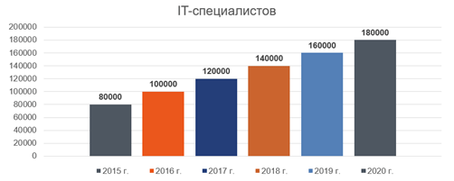
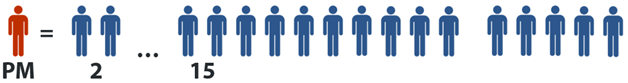
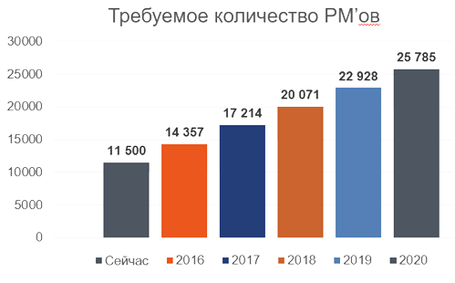

Обучение проектному менеджменту в IT-разработке
Инвестируйте в себя. Ваша карьера – это мотор вашего богатства
Вложиться в свое развитие – лучшая инвестиция из возможных
Внутри:
Чем бы вы ни занимались до этого — закончив программу, вы сможете управлять проектами в IT-разработке.
В среднем на 1 PMприходится примерно 7 сотрудников
В течение ближайших 5 лет количество IT-специалистов в Украине почти утроится. С 80.000 станет 200.000. На 100.000+ специалистов потребуются и руководители (PM = ProjectManagers)
УЖЕ есть около 11.500 руководителей
ЕЩЕ потребуется примерно 14.000 новых
Или по 3.000 PM’ов каждый год!
Зарплаты PMв ITсекторе разработки программного обеспечения составили от $2500 до $4000 и более. То есть Вам понадобится всего полгода, чтобы купить автомобиль!
Подойдет тем, кто до этого вообще не работал в IT, не имеет опыта в разработке, не знаком с отраслью, но хочет в нее попасть. Здесь самый большой объем и количество материала. По завершению Вы сможете руководить проектами средней сложности. Вам потребуется набраться практического опыта в течение 2-3 лет, как минимум, чтобы переходить дальше.
Подойдет тем, кто знаком с разработкой в IT, но не является менеджером, либо только недавно им стал (до 1 года). Здесь средний объем и количество материала. По завершению,Вы сможете руководить проектами любой сложности, включая проекты Enterprise сектора. Здесь желательно закрепление практического опыта не менее 2 лет с последующей сертификацией в любом из подходящих Вам направлений: PMP, IMPA, Prince2 и т.д.
Идеально подходит тем, кто уже является руководителем проектов более года, но чья карьера по каким-то причинам остановилась, либо замедлилась. Вы уже должны быть (или считаете себя) довольно опытным руководителем в проектах разработки IT решений, и хотите расти дальше. Здесь также средний объем по количеству материала, в то же время — это самый сложный поток, т.к. глубина рассматриваемых тем наибольшая, также тут присутствуют темы и материалы, которых нет в первых двух уровнях программы. Закончив этот уровень,Вы сможете управлять группой проектов, руководить отделом или департаментом, а может быть и небольшой компанией.
Внутри любая из программ программа разбита на три большие области знаний. Это Software Development Life Cycle, Management Hard Skills и Management Soft Skills
Этапы и фазы разработки, Release Management Process, многостримовая разработка, Version Control Systems, Configuration and Support Teams (L1, L2, L3) и многое другое
Процессы управления проектами, планирование проекта, критический путь, KPI, управление изменениями, качеством, ресурсами проекта, типы контрактов, отчетность, методологии и фреймворки, и многое другое
Коммуникации, лидерство, тайм-менеджмент, работа с командой, типология личности, конфликты, убеждение и переговоры, проведение совещаний, собеседований, построение карьеры и многое другое
Профессиональный менеджер в IT-разработке программного обеспечения знает и умеет использовать все эти три области. Любая другая программа без какой-либо из этих трех областей была бы не полной и не позволит Вам стать профессиональным руководителем.
Можно ли доверять качеству обучения? Первый запуск буду вести лично я — Алексей Егошин. Сертифицированный тренер Luxoft Training Center по управлению проектами и soft skills с 5 летним стажем преподавания. За 2014-2015 года провел тренингов на 600+ часов. Сертифицированный PMP и MBA специалист. Обладатель множества сертификатов, постоянно повышающий свой профессиональный уровень. Более 10 лет работы в ведущих IT и Telecom компаниях Украины (Квазар-Микро, MTC, Инфопульс и Luxoft). Огромный практический опыт работы в международных проектах, который продолжает постоянно пополняться благодаря работе в секторе разработки программного обеспечения. Активный участник и докладчик PM сообществ и тематическОбладатель множества сертификатових конференций по управлению проектами. Подробнее обо мне можно прочитать на моем сайте на странице про автора.
Обучение будет проходить очно в MBA-подобном стиле:
Время:
Таким образом на занятии мы не будем изучать теорию, а будем ее обсуждать. Изучать/читать/просматривать новую тему Вы будете самостоятельно ДО занятия. Это позволяет максимально наполнить занятия практикой, разбором кейсов и примеров, решением ситуаций и обсуждением в группе, что дает огромный выигрыш по сравнению с обычными точечными тренингами.
Невыполнение домашнего задания приведет к не допуску на занятие. Несколько не допусков приведут к исключению из программы обучения.
По окончании обучения все участники сдают выпускной экзамен и в случае прохождения экзамена получают сертификат об окончании программы обучения.